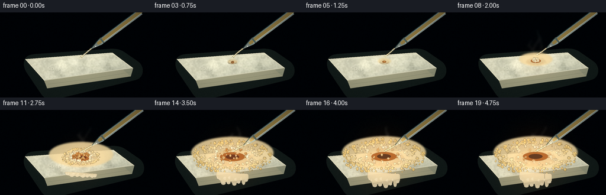
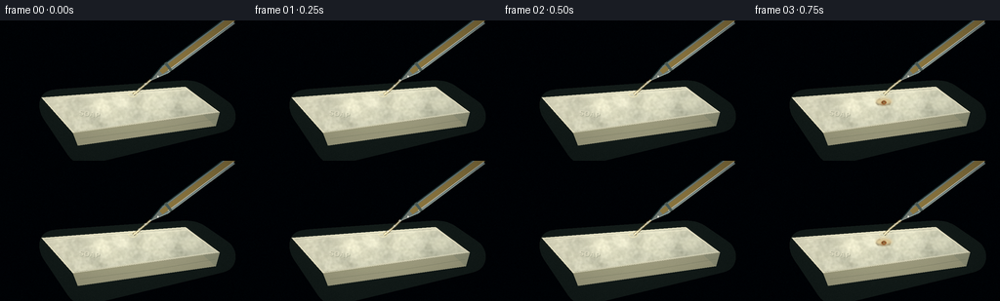

CODING AGENTS AS PIXEL WORLD MODELS
traex/DeepSeek-V4.1-Flash · material_0042
点击播放 · 原生 RGB 像素
逐轮保存的候选
回放视频、检查图与代码变化。
每份候选均可单独播放。实际图片检查记录在下方工具轨迹中。
候选 01播放与检查图
点击播放 · 原生 RGB 像素


展开代码变化
--- 上一保存版本
+++ 本次保存版本
@@ -0,0 +1,605 @@
+from pathlib import Path
+import math
+
+import cv2
+import numpy as np
+from PIL import Image, ImageDraw, ImageFilter, ImageFont
+from scipy.ndimage import gaussian_filter
+
+import artifact_io
+
+
+WIDTH = 256
+HEIGHT = 144
+FRAMES = 20
+FPS = 4.0
+SS = 3
+W = WIDTH * SS
+H = HEIGHT * SS
+RNG_SEED = 4217
+CASE_DIR = Path(__file__).resolve().parent
+
+
+def sc(value):
+ return int(round(value * SS))
+
+
+def spt(points):
+ return [(sc(x), sc(y)) for x, y in points]
+
+
+def smoothstep(a, b, value):
+ t = np.clip((value - a) / (b - a), 0.0, 1.0)
+ return t * t * (3.0 - 2.0 * t)
+
+
+def rgba(color, alpha=255):
+ return tuple(color) + (int(alpha),)
+
+
+def paste_alpha(base, layer):
+ return Image.alpha_composite(base.convert("RGBA"), layer).convert("RGB")
+
+
+def polygon_mask(points, size=(W, H), blur=0.0):
+ mask = Image.new("L", size, 0)
+ ImageDraw.Draw(mask).polygon(points, fill=255)
+ if blur > 0:
+ mask = mask.filter(ImageFilter.GaussianBlur(blur))
+ return mask
+
+
+def ellipse_mask(box, size=(W, H), blur=0.0):
+ mask = Image.new("L", size, 0)
+ ImageDraw.Draw(mask).ellipse(box, fill=255)
+ if blur > 0:
+ mask = mask.filter(ImageFilter.GaussianBlur(blur))
+ return mask
+
+
+def image_from_array(array):
+ return Image.fromarray(np.clip(array, 0, 255).astype(np.uint8), "RGB")
+
+
+def add_mask_color(base, mask, color, opacity=1.0):
+ overlay = np.empty((H, W, 3), dtype=np.float32)
+ overlay[:] = np.asarray(color, dtype=np.float32)
+ m = np.asarray(mask, dtype=np.float32)[..., None] / 255.0
+ m *= opacity
+ src = np.asarray(base, dtype=np.float32)
+ out = src * (1.0 - m) + overlay * m
+ return image_from_array(out)
+
+
+def make_background():
+ yy, xx = np.mgrid[0:H, 0:W].astype(np.float32)
+ yn = yy / max(H - 1, 1)
+ xn = xx / max(W - 1, 1)
+
+ top = np.array([22, 38, 39], dtype=np.float32)
+ mid = np.array([60, 72, 66], dtype=np.float32)
+ low = np.array([79, 74, 59], dtype=np.float32)
+ img = np.empty((H, W, 3), dtype=np.float32)
+ for c in range(3):
+ img[..., c] = np.where(
+ yn < 0.57,
+ top[c] + (mid[c] - top[c]) * smoothstep(0.0, 0.57, yn),
+ mid[c] + (low[c] - mid[c]) * smoothstep(0.57, 1.0, yn),
+ )
+
+ rng = np.random.default_rng(RNG_SEED)
+ broad = gaussian_filter(rng.normal(0, 1, (H, W)), sigma=12 * SS)
+ broad /= max(np.std(broad), 1e-5)
+ fine = gaussian_filter(rng.normal(0, 1, (H, W)), sigma=1.4 * SS)
+ fine /= max(np.std(fine), 1e-5)
+ img += broad[..., None] * np.array([5.0, 5.5, 4.5])
+ img += fine[..., None] * 2.2
+
+ radial = np.exp(-(((xx - 0.28 * W) / (0.52 * W)) ** 2 + ((yy - 0.20 * H) / (0.58 * H)) ** 2))
+ img += radial[..., None] * np.array([12.0, 13.0, 8.0])
+ side_light = np.exp(-(((xx - 0.92 * W) / (0.34 * W)) ** 2 + ((yy - 0.45 * H) / (0.52 * H)) ** 2))
+ img += side_light[..., None] * np.array([14.0, 9.0, 3.0])
+
+ # Soft bands suggest a dark workbench behind the illuminated soap dish.
+ bands = (np.sin(yn * 38.0 + np.sin(xn * 7.0)) * 0.5 + 0.5) * 2.3
+ img += bands[..., None] * (yn < 0.55)[..., None]
+ return image_from_array(gaussian_filter(img, sigma=(2.2 * SS, 2.2 * SS, 0)))
+
+
+def draw_plate(base):
+ layer = Image.new("RGBA", (W, H), (0, 0, 0, 0))
+ d = ImageDraw.Draw(layer)
+ shadow = Image.new("L", (W, H), 0)
+ sd = ImageDraw.Draw(shadow)
+ sd.ellipse((sc(21), sc(101), sc(239), sc(139)), fill=135)
+ shadow = shadow.filter(ImageFilter.GaussianBlur(7 * SS))
+ shade = Image.new("RGBA", (W, H), (8, 15, 15, 0))
+ shade.putalpha(shadow)
+ layer = Image.alpha_composite(layer, shade)
+
+ # Pale stoneware dish with a dark outer rim and a soft inner bevel.
+ d.ellipse((sc(18), sc(94), sc(240), sc(132)), fill=(181, 185, 169, 255))
+ d.ellipse((sc(20), sc(92), sc(238), sc(127)), fill=(220, 220, 199, 255))
+ d.ellipse((sc(27), sc(96), sc(230), sc(123)), fill=(191, 195, 177, 255))
+ d.ellipse((sc(31), sc(97), sc(226), sc(120)), fill=(207, 207, 187, 255))
+ d.arc((sc(19), sc(91), sc(239), sc(129)), 190, 350, fill=(246, 241, 215, 235), width=sc(1.3))
+ d.arc((sc(27), sc(96), sc(230), sc(123)), 10, 165, fill=(121, 129, 116, 170), width=sc(1.2))
+
+ # A few ceramic flecks keep the surface from looking like a flat vector shape.
+ rng = np.random.default_rng(RNG_SEED + 2)
+ for _ in range(90):
+ x = rng.uniform(30, 226) * SS
+ y = rng.uniform(99, 123) * SS
+ if ((x - W / 2) / (W * 0.43)) ** 2 + ((y - 107 * SS) / (19 * SS)) ** 2 > 1:
+ continue
+ r = rng.uniform(0.25, 0.9) * SS
+ col = (116, 123, 108, rng.integers(18, 44))
+ d.ellipse((x - r, y - r, x + r, y + r), fill=col)
+ return paste_alpha(base, layer)
+
+
+def soap_material():
+ yy, xx = np.mgrid[0:H, 0:W].astype(np.float32)
+ rng = np.random.default_rng(RNG_SEED + 7)
+ grain = gaussian_filter(rng.normal(0, 1, (H, W)), sigma=0.9 * SS)
+ grain /= max(np.std(grain), 1e-5)
+ mott = gaussian_filter(rng.normal(0, 1, (H, W)), sigma=5.0 * SS)
+ mott /= max(np.std(mott), 1e-5)
+
+ light = np.array([238, 235, 210], dtype=np.float32)
+ shade = np.array([176, 181, 157], dtype=np.float32)
+ t = np.clip((xx / W) * 0.42 + (yy / H) * 0.32, 0, 1)
+ material = light[None, None, :] * (1 - t[..., None]) + shade[None, None, :] * t[..., None]
+ material += grain[..., None] * 4.5 + mott[..., None] * 7.5
+
+ # Long, quiet soap striations.
+ stripes = np.sin((xx * 0.045 + yy * 0.020) + np.sin(yy * 0.08) * 2.0)
+ material += stripes[..., None] * np.array([2.2, 2.0, 1.2])
+ return image_from_array(material)
+
+
+def draw_soap(base):
+ top_pts = spt([(43, 79), (189, 68), (224, 94), (75, 115)])
+ front_pts = spt([(75, 115), (224, 94), (220, 108), (80, 128)])
+ side_pts = spt([(189, 68), (224, 94), (220, 108), (198, 88)])
+
+ layer = Image.new("RGBA", (W, H), (0, 0, 0, 0))
+ d = ImageDraw.Draw(layer)
+
+ shadow = polygon_mask(spt([(52, 85), (195, 75), (230, 99), (85, 134)]), blur=6 * SS)
+ shadow_img = Image.new("RGBA", (W, H), (20, 25, 20, 0))
+ shadow_img.putalpha(shadow.point(lambda p: int(p * 0.55)))
+ layer = Image.alpha_composite(layer, shadow_img)
+ d = ImageDraw.Draw(layer)
+
+ d.polygon(front_pts, fill=(166, 164, 134, 255))
+ d.polygon(side_pts, fill=(147, 150, 126, 255))
+ d.polygon(top_pts, fill=(222, 219, 191, 255))
+
+ # Shade the vertical faces, then paint the upper face with fine soap texture.
+ front_grad = np.linspace(0, 1, H, dtype=np.float32)[:, None, None]
+ f_overlay = np.zeros((H, W, 3), dtype=np.float32)
+ f_overlay[:] = np.array([160, 155, 121])
+ f_overlay *= (1.06 - 0.18 * front_grad)
+ f_mask = np.asarray(polygon_mask(front_pts))[..., None] / 255.0
+ arr = np.asarray(layer.convert("RGB"), dtype=np.float32)
+ arr = arr * (1 - f_mask * 0.32) + f_overlay * (f_mask * 0.32)
+ layer = image_from_array(arr).convert("RGBA")
+
+ top_mask = polygon_mask(top_pts, blur=0.5 * SS)
+ top_eroded = top_mask.filter(ImageFilter.MinFilter(2 * SS + 1))
+ top_inner = top_mask.filter(ImageFilter.MinFilter(4 * SS + 1))
+ material = soap_material().convert("RGBA")
+ material.putalpha(top_eroded)
+ layer = Image.alpha_composite(layer, material)
+
+ edge = Image.new("RGBA", (W, H), (0, 0, 0, 0))
+ ed = ImageDraw.Draw(edge)
+ ed.polygon(top_pts, outline=(244, 239, 209, 185), width=sc(1.2))
+ d = ImageDraw.Draw(layer)
+ d.line([spt([(46, 80), (190, 69), (220, 93)])[0],
+ spt([(46, 80), (190, 69), (220, 93)])[1],
+ spt([(46, 80), (190, 69), (220, 93)])[2]],
+ fill=(252, 246, 216, 185), width=sc(1.15), joint="curve")
+ d.line(spt([(77, 114), (222, 94)]), fill=(113, 116, 94, 150), width=sc(1.0))
+ layer = Image.alpha_composite(layer, edge)
+
+ # Subtle bevel along the rounded upper edge.
+ bevel = Image.new("RGBA", (W, H), (0, 0, 0, 0))
+ bd = ImageDraw.Draw(bevel)
+ bd.line(spt([(50, 81), (80, 78), (151, 74), (190, 71)]),
+ fill=(255, 250, 222, 95), width=sc(1.5), joint="curve")
+ bd.line(spt([(189, 70), (209, 83), (219, 93)]),
+ fill=(250, 245, 216, 60), width=sc(1.1), joint="curve")
+ bd.line(spt([(82, 121), (152, 112), (219, 101)]),
+ fill=(113, 117, 92, 75), width=sc(1.0), joint="curve")
+ layer = Image.alpha_composite(layer, bevel)
+
+ # Low-contrast embossed wordmark on the undisturbed half of the bar.
+ label = Image.new("RGBA", (W, H), (0, 0, 0, 0))
+ ld = ImageDraw.Draw(label)
+ try:
+ font = ImageFont.truetype("/usr/share/fonts/truetype/dejavu/DejaVuSans-Bold.ttf", sc(7))
+ except OSError:
+ font = ImageFont.load_default()
+ text = "SOAP"
+ box = ld.textbbox((0, 0), text, font=font)
+ tw, th = box[2] - box[0], box[3] - box[1]
+ tx, ty = sc(92) - tw // 2, sc(94) - th // 2
+ ld.text((tx + sc(0.8), ty + sc(0.8)), text, font=font, fill=(94, 99, 78, 58))
+ ld.text((tx, ty), text, font=font, fill=(255, 250, 222, 72))
+ label = label.rotate(-6, resample=Image.Resampling.BICUBIC, center=(sc(92), sc(94)))
+ layer = Image.alpha_composite(layer, label)
+ return paste_alpha(base, layer)
+
+
+def reaction_center(frame):
+ t = frame / (FRAMES - 1)
+ return (136.0 + 0.5 * math.sin(t * math.pi * 2.0),
+ 84.0 - 1.1 * t + 0.25 * math.sin(t * math.pi * 4.0))
+
+
+def draw_stain(base, progress, center):
+ if progress <= 0.01:
+ return base
+ cx, cy = center
+ rr = 7.0 + 27.0 * smoothstep(0.02, 0.92, progress)
+ ry = 3.0 + 10.0 * smoothstep(0.02, 0.92, progress)
+
+ layer = Image.new("RGBA", (W, H), (0, 0, 0, 0))
+ d = ImageDraw.Draw(layer)
+ outer = (sc(cx - rr), sc(cy - ry), sc(cx + rr), sc(cy + ry))
+ d.ellipse(outer, fill=(112, 59, 22, 210))
+ d.ellipse((sc(cx - rr * 0.78), sc(cy - ry * 0.76),
+ sc(cx + rr * 0.78), sc(cy + ry * 0.76)), fill=(83, 43, 17, 235))
+ d.ellipse((sc(cx - rr * 0.47), sc(cy - ry * 0.48),
+ sc(cx + rr * 0.47), sc(cy + ry * 0.48)), fill=(45, 31, 20, 245))
+ if progress > 0.25:
+ a = int(45 + 55 * progress)
+ d.ellipse((sc(cx - rr * 1.10), sc(cy - ry * 1.05),
+ sc(cx + rr * 1.10), sc(cy + ry * 1.05)),
+ outline=(230, 159, 65, a), width=sc(1.0))
+
+ # Irregular reaction boundary and tiny carbon flecks.
+ rng = np.random.default_rng(RNG_SEED + 11 + int(progress * 100))
+ for _ in range(int(14 + 30 * progress)):
+ ang = rng.uniform(0, math.tau)
+ rad = rng.uniform(0.35, 1.05)
+ px = cx + math.cos(ang) * rr * rad
+ py = cy + math.sin(ang) * ry * rad
+ bub = rng.uniform(0.5, 1.8) * SS
+ col = (32 + rng.integers(0, 20), 24 + rng.integers(0, 14), 17, rng.integers(80, 170))
+ d.ellipse((px * SS - bub, py * SS - bub, px * SS + bub, py * SS + bub), fill=col)
+
+ layer = layer.filter(ImageFilter.GaussianBlur(0.45 * SS))
+ return paste_alpha(base, layer)
+
+
+def make_bubbles():
+ rng = np.random.default_rng(RNG_SEED + 31)
+ bubbles = []
+ for _ in range(390):
+ u = rng.random()
+ radial = math.sqrt(u)
+ angle = rng.uniform(0, math.tau)
+ birth = 0.02 + 0.77 * (radial ** 1.35) + rng.uniform(-0.045, 0.045)
+ bubbles.append({
+ "angle": angle,
+ "radial": radial,
+ "birth": float(np.clip(birth, 0.01, 0.94)),
+ "radius": float(rng.uniform(0.55, 2.5) * (0.78 + 0.30 * radial)),
+ "phase": float(rng.uniform(0, math.tau)),
+ "stretch": float(rng.uniform(0.72, 1.18)),
+ "tone": float(rng.uniform(0, 1)),
+ "life": float(rng.uniform(0.55, 1.0)),
+ })
+ bubbles.sort(key=lambda b: b["radial"])
+ return bubbles
+
+
+def foam_color(tone, center_weight):
+ near = np.array([183, 112, 46], dtype=np.float32)
+ mid = np.array([232, 196, 117], dtype=np.float32)
+ outer = np.array([244, 238, 207], dtype=np.float32)
+ if center_weight > 0.58:
+ a, b, q = near, mid, (center_weight - 0.58) / 0.42
+ else:
+ a, b, q = mid, outer, center_weight / 0.58
+ c = a * (1 - q) + b * q
+ c *= 0.93 + 0.13 * tone
+ return tuple(np.clip(c, 0, 255).astype(np.uint8))
+
+
+def draw_foam(base, progress, center, bubbles, frame):
+ if progress <= 0.015:
+ return base
+ cx, cy = center
+ grow = smoothstep(0.015, 0.92, progress)
+ rx = 8.0 + 61.0 * grow
+ ry = 4.5 + 24.0 * grow
+ mound_lift = 8.5 * grow
+
+ # Broad translucent base catches the gaps between individual bubbles.
+ base_mask = Image.new("L", (W, H), 0)
+ bd = ImageDraw.Draw(base_mask)
+ bd.ellipse((sc(cx - rx), sc(cy - ry - mound_lift),
+ sc(cx + rx), sc(cy + ry * 0.58)), fill=225)
+ base_mask = base_mask.filter(ImageFilter.GaussianBlur(1.2 * SS))
+ base_layer = Image.new("RGBA", (W, H), (231, 209, 157, 0))
+ base_layer.putalpha(base_mask)
+ base = paste_alpha(base, base_layer)
+
+ layer = Image.new("RGBA", (W, H), (0, 0, 0, 0))
+ d = ImageDraw.Draw(layer)
+
+ # A caramel reaction front remains visible inside the pale foam crown.
+ inner_rx = max(2.0, rx * 0.30)
+ inner_ry = max(1.8, ry * 0.26)
+ pulse = 0.5 + 0.5 * math.sin(frame * 1.9)
+ d.ellipse((sc(cx - inner_rx), sc(cy - inner_ry - mound_lift * 0.42),
+ sc(cx + inner_rx), sc(cy + inner_ry - mound_lift * 0.42)),
+ fill=(153, 76, 22, 210))
+ d.ellipse((sc(cx - inner_rx * 0.55), sc(cy - inner_ry * 0.52 - mound_lift * 0.42),
+ sc(cx + inner_rx * 0.55), sc(cy + inner_ry * 0.52 - mound_lift * 0.42)),
+ fill=(69 + int(pulse * 18), 38, 20, 235))
+
+ for bubble in bubbles:
+ age = progress - bubble["birth"]
+ if age <= 0:
+ continue
+ if age > bubble["life"] * 0.72:
+ pop = np.clip((age - bubble["life"] * 0.72) / (bubble["life"] * 0.28), 0, 1)
+ visibility = 1.0 - pop
+ else:
+ visibility = 1.0
+ if visibility <= 0.05:
+ continue
+
+ radius_scale = 0.55 + 0.45 * min(age / 0.16, 1.0)
+ wobble = 1.0 + 0.045 * math.sin(frame * 1.5 + bubble["phase"])
+ r = bubble["radius"] * radius_scale * wobble
+ radial = bubble["radial"] * grow
+ px = cx + math.cos(bubble["angle"]) * (rx * radial + r * 0.35)
+ py = cy + math.sin(bubble["angle"]) * (ry * radial + r * 0.18) - mound_lift * (1.0 - radial * 0.62)
+ py += 0.45 * math.sin(frame * 1.7 + bubble["phase"])
+ if r < 0.45:
+ continue
+ ew = r * bubble["stretch"]
+ eh = r / max(bubble["stretch"], 0.72)
+ alpha = int(235 * visibility)
+ tone = bubble["tone"]
+ cw = float(np.clip(1.0 - bubble["radial"] * 1.13, 0, 1))
+ fill = foam_color(tone, cw)
+ rim = tuple(np.clip(np.asarray(fill) * 0.72, 0, 255).astype(np.uint8))
+ box = (sc(px - ew), sc(py - eh), sc(px + ew), sc(py + eh))
+ d.ellipse(box, fill=rgba(rim, alpha))
+ if ew > 0.8:
+ inner = (sc(px - ew * 0.78), sc(py - eh * 0.78),
+ sc(px + ew * 0.78), sc(py + eh * 0.78))
+ d.ellipse(inner, fill=rgba(fill, alpha))
+ if ew > 1.15:
+ hr = max(0.45 * SS, ew * 0.24)
+ hx = px * SS - ew * SS * 0.31
+ hy = py * SS - eh * SS * 0.34
+ d.ellipse((hx - hr, hy - hr * 0.72, hx + hr, hy + hr * 0.72),
+ fill=(255, 249, 219, int(180 * visibility)))
+
+ # Foam oozing over the near edge of the bar late in the reaction.
+ if progress > 0.48:
+ spill = smoothstep(0.48, 1.0, progress)
+ rng = np.random.default_rng(RNG_SEED + 71)
+ for k in range(13):
+ x = cx + (k - 6) * 3.7 + rng.uniform(-1.2, 1.2)
+ drop = (8.0 + rng.uniform(0, 15)) * spill
+ top_y = 108.0 + 0.07 * (x - cx)
+ wdt = rng.uniform(2.3, 5.1)
+ d.rounded_rectangle((sc(x - wdt), sc(top_y - 1.8), sc(x + wdt), sc(top_y + drop)),
+ radius=sc(wdt * 0.8), fill=(229, 214, 174, 220))
+ d.ellipse((sc(x - wdt * 0.75), sc(top_y + drop - 2.3),
+ sc(x + wdt * 0.75), sc(top_y + drop + 2.3)),
+ fill=(239, 226, 190, 225))
+
+ layer = layer.filter(ImageFilter.GaussianBlur(0.18 * SS))
+ return paste_alpha(base, layer)
+
+
+def draw_vapor(base, progress, center, frame):
+ if progress < 0.20:
+ return base
+ cx, cy = center
+ amount = smoothstep(0.20, 0.95, progress)
+ layer = Image.new("RGBA", (W, H), (0, 0, 0, 0))
+ d = ImageDraw.Draw(layer)
+ for k in range(5):
+ phase = frame * 0.82 + k * 1.71
+ x0 = cx + (k - 2) * 3.3
+ pts = []
+ for j in range(15):
+ q = j / 14
+ x = x0 + math.sin(q * 4.2 + phase) * (2.0 + 5.5 * q) + (k - 2) * q * 2.0
+ y = cy - 7 - q * (23 + 6 * k)
+ pts.append((sc(x), sc(y)))
+ width = sc(2.0 + 2.0 * (k % 3))
+ alpha = int((18 + 19 * amount) * (0.72 + 0.28 * math.sin(phase) ** 2))
+ d.line(pts, fill=(218, 213, 193, alpha), width=width, joint="curve")
+ layer = layer.filter(ImageFilter.GaussianBlur(2.2 * SS))
+ return paste_alpha(base, layer)
+
+
+def draw_acid_stream(base, progress, center, frame):
+ cx, cy = center
+ tip = (154.0, 61.0)
+ t = frame / (FRAMES - 1)
+ wiggle = 0.9 * math.sin(frame * 1.7)
+ end_y = cy - (8.0 + 4.0 * smoothstep(0.0, 0.6, progress))
+ end = (cx + 0.4, end_y)
+ points = []
+ for j in range(18):
+ q = j / 17
+ x = tip[0] * (1 - q) + end[0] * q + math.sin(q * math.pi) * wiggle
+ y = tip[1] * (1 - q) + end[1] * q
+ points.append((x, y))
+
+ layer = Image.new("RGBA", (W, H), (0, 0, 0, 0))
+ d = ImageDraw.Draw(layer)
+ pix = [(sc(x), sc(y)) for x, y in points]
+ d.line(pix, fill=(99, 86, 53, 155), width=sc(3.0), joint="curve")
+ d.line(pix, fill=(241, 220, 158, 220), width=sc(1.7), joint="curve")
+ d.line(pix, fill=(255, 249, 220, 205), width=sc(0.55), joint="curve")
+
+ # Moving highlights travel down the acid filament.
+ for k in range(3):
+ q = (t * 2.2 + k / 3.0) % 1.0
+ idx = int(q * (len(points) - 1))
+ px, py = points[idx]
+ r = sc(0.7 + 0.25 * math.sin(frame + k))
+ d.ellipse((px * SS - r, py * SS - r, px * SS + r, py * SS + r),
+ fill=(255, 252, 230, 185))
+
+ # A small splash where the acid meets the reacting surface.
+ splash = max(0.0, 1.0 - progress * 1.6)
+ if splash > 0:
+ rr = sc(1.8 + 3.0 * splash)
+ d.ellipse((cx * SS - rr, end_y * SS - rr * 0.55,
+ cx * SS + rr, end_y * SS + rr * 0.55),
+ outline=(255, 242, 188, int(155 * splash)), width=sc(0.5))
+ return paste_alpha(base, layer)
+
+
+def draw_pipette(base, frame):
+ # Tapered glass pipette entering from the upper right.
+ axis = np.array([238.0, -2.0], dtype=np.float32) - np.array([154.0, 61.0], dtype=np.float32)
+ length = np.linalg.norm(axis)
+ u = axis / length
+ n = np.array([-u[1], u[0]], dtype=np.float32)
+
+ tip = np.array([154.0, 61.0], dtype=np.float32)
+ shoulder = tip + u * 18.0
+ end = tip + u * 103.0
+
+ def tube(half_tip, half_shoulder):
+ pts = [tip + n * half_tip, shoulder + n * half_shoulder,
+ end + n * half_shoulder, end - n * half_shoulder,
+ shoulder - n * half_shoulder, tip - n * half_tip]
+ return spt([(float(x), float(y)) for x, y in pts])
+
+ layer = Image.new("RGBA", (W, H), (0, 0, 0, 0))
+ d = ImageDraw.Draw(layer)
+ outer = tube(0.8, 5.2)
+ inner = tube(0.45, 3.7)
+ d.polygon(outer, fill=(151, 181, 175, 195), outline=(36, 55, 53, 220), width=sc(0.8))
+ d.polygon(inner, fill=(210, 223, 208, 140))
+
+ liquid_start = tip + u * 13.0
+ liquid_end = tip + u * 105.0
+ liquid_pts = [liquid_start + n * 2.4, liquid_end + n * 3.1,
+ liquid_end - n * 3.1, liquid_start - n * 2.4]
+ d.polygon(spt([(float(x), float(y)) for x, y in liquid_pts]),
+ fill=(208, 174, 91, 175))
+
+ # Glass edge and a crisp specular line.
+ left = [tip + n * 0.6, shoulder + n * 4.8, end + n * 5.0]
+ right = [tip - n * 0.5, shoulder - n * 4.7, end - n * 5.0]
+ d.line(spt([(float(x), float(y)) for x, y in left]),
+ fill=(235, 247, 235, 180), width=sc(0.8), joint="curve")
+ d.line(spt([(float(x), float(y)) for x, y in right]),
+ fill=(39, 63, 59, 180), width=sc(0.9), joint="curve")
+ highlight = [tip + u * 20 + n * 3.0, end + n * 3.2]
+ d.line(spt([(float(x), float(y)) for x, y in highlight]),
+ fill=(255, 255, 239, 210), width=sc(0.65))
+
+ # A polished collar separates the tapered tip from the glass barrel.
+ collar_c = tip + u * 21.0
+ cp = [collar_c + n * 5.1, collar_c + u * 2.5 + n * 5.1,
+ collar_c + u * 2.5 - n * 5.1, collar_c - n * 5.1]
+ d.polygon(spt([(float(x), float(y)) for x, y in cp]), fill=(93, 111, 102, 210))
+
+ # Glass catches a cool rim light.
+ glint = tip + u * 8.0 + n * 1.6
+ d.ellipse((sc(glint[0] - 0.8), sc(glint[1] - 0.8),
+ sc(glint[0] + 0.8), sc(glint[1] + 0.8)),
+ fill=(255, 255, 246, 220))
+ return paste_alpha(base, layer)
+
+
+def add_reaction_light(image, progress, center):
+ if progress <= 0.02:
+ return image
+ cx, cy = center
+ yy, xx = np.mgrid[0:H, 0:W].astype(np.float32)
+ sigma = (11 + 24 * progress) * SS
+ glow = np.exp(-((xx - cx * SS) ** 2 + (yy - cy * SS) ** 2) / (2 * sigma ** 2))
+ arr = np.asarray(image, dtype=np.float32)
+ arr += glow[..., None] * np.array([24.0, 10.0, 2.0]) * progress
+ return image_from_array(arr)
+
+
+def add_bloom(image, progress):
+ arr = np.asarray(image, dtype=np.float32)
+ lum = arr.max(axis=2)
+ bright = np.clip((lum - 205.0) / 50.0, 0, 1)
+ bloom = gaussian_filter(bright, sigma=3.0 * SS)
+ arr += bloom[..., None] * np.array([25.0, 21.0, 13.0]) * (0.6 + 0.4 * progress)
+ return image_from_array(arr)
+
+
+def post_process(image, frame):
+ arr = np.asarray(image, dtype=np.float32)
+ yy, xx = np.mgrid[0:H, 0:W].astype(np.float32)
+ nx = (xx / W - 0.5) * 2
+ ny = (yy / H - 0.5) * 2
+ vignette = np.clip(1.0 - 0.25 * (nx * nx * 0.75 + ny * ny * 0.55), 0.0, 1.0)
+ arr *= vignette[..., None]
+
+ # Gentle warm highlights and cool shadows.
+ lum = arr.mean(axis=2, keepdims=True) / 255.0
+ arr += (1 - lum) * np.array([-2.0, 2.0, 5.0])
+ arr += lum * np.array([3.0, 1.0, -1.0])
+ rng = np.random.default_rng(RNG_SEED + 101 + frame)
+ grain = rng.normal(0, 1, (H, W, 1)).astype(np.float32)
+ arr += grain * 2.0
+ return image_from_array(arr)
+
+
+def camera_move(image, frame):
+ t = frame / (FRAMES - 1)
+ zoom = 1.008 + 0.020 * smoothstep(0.0, 1.0, t)
+ cx, cy = W * 0.50, H * 0.56
+ shift_x = math.sin(t * math.pi * 0.8) * 0.9 * SS
+ shift_y = -t * 0.7 * SS
+ m = np.array([[zoom, 0, cx * (1 - zoom) + shift_x],
+ [0, zoom, cy * (1 - zoom) + shift_y]], dtype=np.float32)
+ warped = cv2.warpAffine(np.asarray(image), m, (W, H),
+ flags=cv2.INTER_CUBIC, borderMode=cv2.BORDER_REFLECT)
+ return image_from_array(warped)
+
+
+def render_frame(frame, bubbles, background):
+ progress = float(smoothstep(0.055, 0.96, frame / (FRAMES - 1)))
+ center = reaction_center(frame)
+ image = background.copy()
+ image = draw_plate(image)
+ image = draw_soap(image)
+ image = draw_stain(image, progress, center)
+ image = draw_vapor(image, progress, center, frame)
+ image = draw_foam(image, progress, center, bubbles, frame)
+ image = draw_acid_stream(image, progress, center, frame)
+ image = draw_pipette(image, frame)
+ image = add_reaction_light(image, progress, center)
+ image = add_bloom(image, progress)
+ image = post_process(image, frame)
+ image = camera_move(image, frame)
+ image = image.resize((WIDTH, HEIGHT), Image.Resampling.LANCZOS)
+ return np.asarray(image, dtype=np.uint8)
+
+
+def main():
+ background = make_background()
+ bubbles = make_bubbles()
+ frames = np.stack([render_frame(i, bubbles, background) for i in range(FRAMES)])
+ artifact_io.save(frames, CASE_DIR)
+ print(f"saved {frames.shape} RGB frames to {CASE_DIR}")
+
+
+if __name__ == "__main__":
+ main()
可观测工具轨迹
实际执行的命令与返回图片。
命令 1exit 0
/bin/bash -c "pwd && rg --files -g '"'!**/.git/**'"' | sed -n '1,160p'"
命令 2exit 0
/bin/bash -c 'cat prompt.txt'
命令 3exit 0
/bin/bash -c 'cat GENERATION_RULES.md'
命令 4exit 0
/bin/bash -c 'cat task_spec.json'
命令 5exit 0
/bin/bash -c "find . -maxdepth 2 -type f -printf '%p %s bytes\\n' | sort"
命令 6exit 0
/bin/bash -c "sed -n '1,260p' artifact_io.py"
命令 7exit 0
/bin/bash -c "sed -n '1,260p' player_template.html"
命令 8exit 0
/bin/bash -c "python - <<'PY'
import importlib.util
for m in ['numpy','PIL','cv2','imageio','scipy','skimage']:
print(m, bool(importlib.util.find_spec(m)))
PY"命令 9exit 0
/bin/bash -c 'python generate.py'
命令 10exit 127
/bin/bash -c 'identify inspection.png transition_check.png frames/00.png frames/10.png frames/19.png'
命令 11exit 0
/bin/bash -c 'command -v chafa || command -v viu || command -v img2txt || command -v jp2 || true'
命令 12exit 0
/bin/bash -c "python - <<'PY'
import numpy as np
from PIL import Image
from pathlib import Path
for p in sorted(Path('frames').glob('*.png')):
a=np.asarray(Image.open(p).convert('RGB')).astype(float)
print(p.name, 'mean', a.mean((0,1)).round(1), 'std', round(float(a.std()),1), 'minmax', int(a.min()), int(a.max()))
PY"命令 13exit 0
/bin/bash -c "python - <<'PY'
from PIL import Image, ImageOps
import numpy as np
chars=' .:-=+*#%@'
for n in [0,7,12,19]:
a=np.asarray(Image.open(f'frames/{n:02d}.png').convert('RGB').resize((64,28)))
y=(0.2126*a[:,:,0]+0.7152*a[:,:,1]+0.0722*a[:,:,2])
y=np.clip((y-10)/(240-10),0,1)
print('\\nFRAME',n)
for row in y:
print(''.join(chars[min(len(chars)-1,int(v*(len(chars)-1)))] for v in row))
PY"命令 14exit 0
/bin/bash -c "python - <<'PY'
from pathlib import Path
import json
import numpy as np
from PIL import Image
spec=json.loads(Path('task_spec.json').read_text())
with np.load('pixels.npz') as z:
p=z['pixels']
print('pixels.npz', p.shape, p.dtype, int(p.min()), int(p.max()))
frames=sorted(Path('frames').glob('*.png'))
print('frame files',len(frames),'sizes', sorted({Image.open(x).size for x in frames}))
arr=np.stack([np.asarray(Image.open(x).convert('RGB')) for x in frames]).astype(np.int16)
d=np.abs(np.diff(arr,axis=0))
print('consecutive mean abs diff:', [round(float(v),2) for v in d.mean((1,2,3))])
print('first-to-last mean abs diff:', round(float(np.abs(arr[-1]-arr[0]).mean()),2))
print('artifacts', [(x.name,x.stat().st_size) for x in [Path('pixels.npz'),Path('index.html'),Path('inspection.png'),Path('transition_check.png')]])
PY"命令 15exit 0
/bin/bash -c 'git status --short 2>/dev/null || true'
保存候选 1 份；完成命令 15 次；可验证图片返回 0 张。原始 API 响应与完整日志保留在本地。